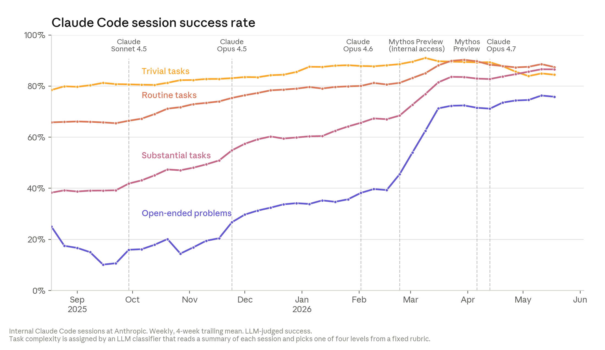
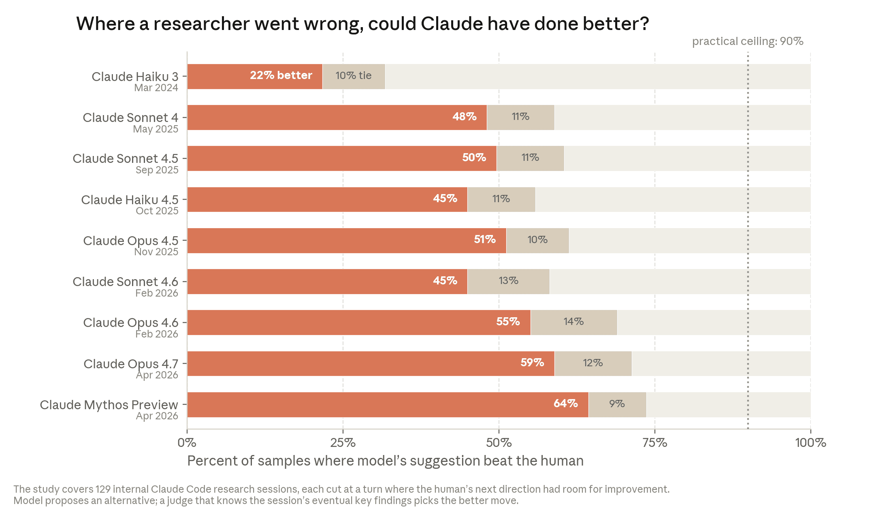

Recursive self-improvement
The scenario where AI systems increasingly automate the work of building stronger AI systems, shifting the frontier from human execution toward compute, experiments, verification, and institutional judgment.
Core Idea
Recursive self-improvement has three stages: AI-assisted development, AI-accelerated R&D, and full self-improvement where AI systems can design and develop successor systems. The shift is compounding: if models write more code, run more experiments, and improve the tools used to build future models, each generation can increase the rate at which the next is built.
| Stage | Human role | AI role | Bottleneck |
|---|---|---|---|
| AI-assisted development | Write, review, decide | Draft code, debug, run tools | Human execution and review |
| AI-accelerated R&D | Choose directions, validate results | Implement experiments, analyze failures | Research taste, verification, compute |
| Full self-improvement | Oversight and governance | Build successor systems | Compute, alignment, evaluation, coordination |
Evidence Stack
The Anthropic article combines external benchmark trends with internal production data. The central claim is not that AI already runs the full research loop, but that more of the loop is being delegated.


External evidence points in the same direction. METR's task-completion time horizon metric estimates the length of tasks frontier agents can complete at fixed reliability.
The Bottleneck Moves
Once an AI system can cheaply perform implementation work, the scarce resource shifts: from typing code to reviewing code, from running experiments to choosing which experiments matter, and from producing ideas to filtering and validating them.
- Human code review becomes a throughput limit.
- Experiment prioritization becomes more important than experiment generation.
- Evaluation and safety review must scale with output volume.
- Infrastructure capacity becomes part of organizational strategy.
Research Taste
The hardest remaining part is research taste: picking problems that matter, interpreting ambiguous results, and deciding when a path is a dead end.

Possible Futures
- The trend stalls: today's capabilities diffuse broadly, but progress bends into an S-curve.
- AI labs compound efficiency gains: humans still set direction, while each person coordinates far more AI-executed work.
- Full recursive self-improvement emerges: AI systems become capable of designing and developing successor systems.
The prudent read is that even without full self-improvement, AI-accelerated R&D changes the operating model of frontier labs and AI-native companies.
Paper Trail
- Attention Is All You Need - Transformer architecture as a rare breakthrough contrasted with incremental frontier progress.
- Measuring AI Ability to Complete Long Tasks - METR's time-horizon metric for autonomous task duration.
- Measuring the Impact of Early-2025 AI on Experienced Open-Source Developer Productivity - counterweight showing perceived and measured productivity can diverge.
- Benchmarks Saturate When The Model Gets Smarter Than The Judge - relevant to the evaluation bottleneck as stronger models expose benchmark and judge failures.